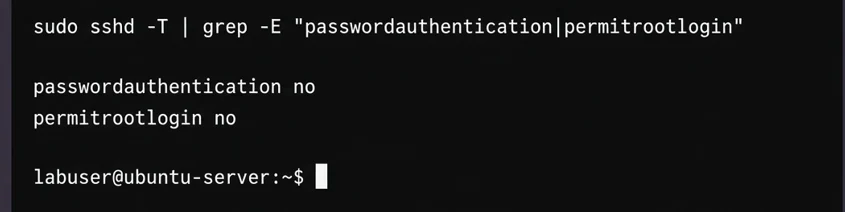
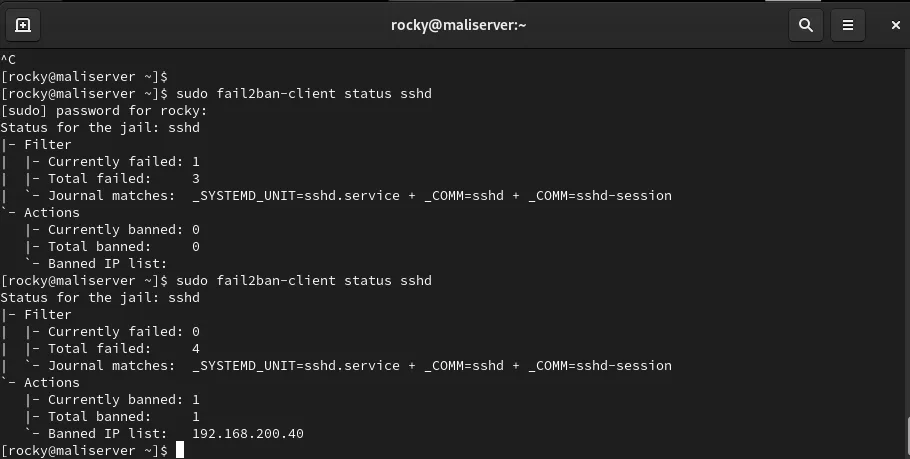
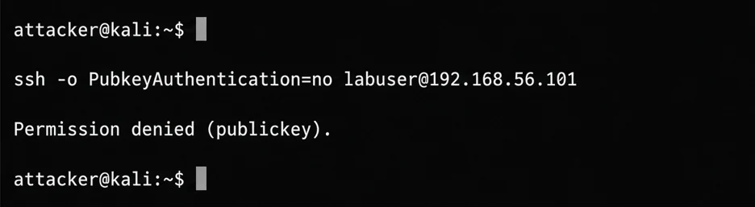

SSH is usually the first service attackers probe on a new server, and bots start trying passwords within minutes. These steps are written for Debian and Ubuntu. On Red Hat based systems the service is called sshd.
Read next
- Beginner’s Guide to Linux Server Hardening & Fail2ban
- Setting Up a BIND9 DNS Server on Rocky Linux (Forward and Reverse Zones)
- Postfix and Dovecot Mail Server: 7 Problems I Hit and How I Fixed Them
- Apache Virtual Hosts with a Self-Signed SSL Certificate and HTTP Redirect
1. Use key login, not passwords
ssh-keygen -t ed25519
ssh-copy-id user@server2. Edit /etc/ssh/sshd_config
PermitRootLogin no
PasswordAuthentication nosudo sshd -t
sudo systemctl reload sshsshd -t checks the file for mistakes before you reload. Keep your current session open and test a second login in a new window before you close anything.
3. Allow only what you need through the firewall
sudo ufw allow OpenSSH
sudo ufw enable4. Add Fail2ban
sudo apt install fail2banCreate /etc/fail2ban/jail.local with:
[sshd]
enabled = true
maxretry = 5
findtime = 10m
bantime = 1hsudo systemctl restart fail2ban
sudo fail2ban-client status sshd5. Keep it updated
sudo apt install unattended-upgradesWhy these steps matter
A public SSH port is scanned all day. Most attempts are automated and guess common usernames, so the goal is to make guessing useless: no passwords, no root, few allowed users and a ban for repeat offenders. Each step below closes one door, and you should confirm every change instead of trusting that it worked.
Check what the server really uses
Editing sshd_config does not always change the live setting. On many Ubuntu and cloud images, extra files in /etc/ssh/sshd_config.d/ are read first, and a line such as PasswordAuthentication yes in one of them can override your edit. Ask the running configuration directly.
sudo sshd -T | grep -E "passwordauthentication|permitrootlogin|pubkeyauthentication"
ls /etc/ssh/sshd_config.d/If the output still says passwordauthentication yes after your change, search those drop-in files and edit or remove the conflicting line.
After editing the file, ask sshd for the settings it is actually running with. Both password login and root login should show as no.

Limit who can log in
Even with keys, fewer accounts means fewer targets. AllowUsers lets only named accounts connect, and MaxAuthTries cuts the number of guesses per connection.
AllowUsers labuser
MaxAuthTries 3
LoginGraceTime 30Run sudo sshd -t after editing and reload the service. Keep your first session open until a new login works.
Test the lock from the outside
Do not assume that password login is off. From a second machine, force a password attempt and make sure it is refused.
ssh -o PubkeyAuthentication=no labuser@serverYou should see a Permission denied (publickey) message and no password prompt. Test root the same way. This five second check is more reliable than reading the file again.

From a second machine I forced a password attempt. The server refuses it because only public keys are accepted.

What Fail2ban adds
Keys stop password guessing, but bots still fill the log and waste resources. Fail2ban reads the authentication log and blocks an address after repeated failures. The screenshot shows the status command on my lab server: the failed count rises, then the client address appears under the banned list. When you test this, use a machine you control and keep a way to unban yourself with sudo fail2ban-client set sshd unbanip ADDRESS.
A note on changing the port
Moving SSH to another port reduces log noise from simple scans, but it is not real protection. Any scanner finds the new port quickly. Treat it as optional tidying after keys, firewall and Fail2ban are done, and remember to allow the new port in the firewall before you restart the service.
Common mistakes
The most common lockout is disabling password login before the key works. The second is enabling the firewall before allowing SSH. The third is editing the file and forgetting to reload. Keep a console or provider rescue option nearby when you work on a remote machine, and make one change at a time so you know which one caused a problem.
Practice in your own lab
Use a virtual machine you can reach from the console. Add a second user, copy a key to it and confirm login. Then turn off password login and run the outside test above. Next, make three wrong attempts from another machine and watch the Fail2ban status change. Finally, restore access with the unban command. Writing the result of each step in your notes gives you a record you can reuse for coursework and for your portfolio.
Set up your key and test it before you disable password login, otherwise you can lock yourself out.